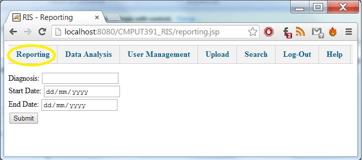
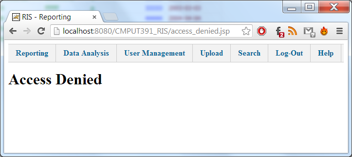
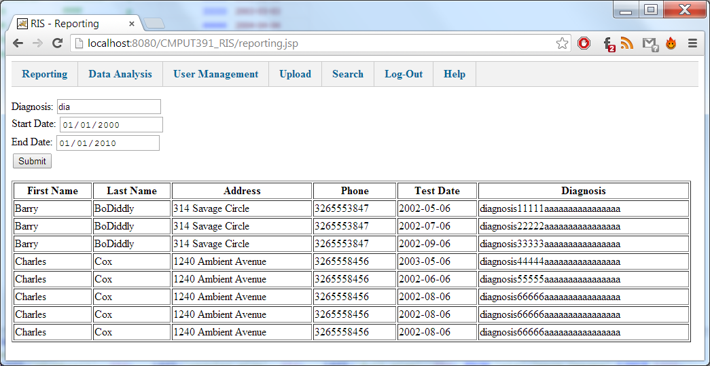

Users can navigate to this module by selecting the "Reporting" button in the navigation bar.

If the current user is an Administrator class, access to this page will be granted. Else, the user will be redirected to the Access Denied page where which they can still use the navigation bar to access other modules.

To generate the report, the user has the option to enter three criteria; Diagnosis, Test Start Date, and Test End Date. The user can enter any combination of these criteria (or none). When the user clicks submit, the report data will be generated and displayed in a table underneath the report data form.

Created with the Personal Edition of HelpNDoc: Generate EPub eBooks with ease